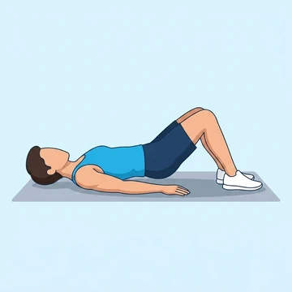
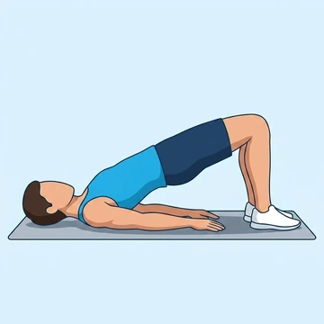
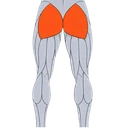
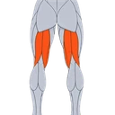

Glute Bridge
A bodyweight glute activation exercise performed lying on the floor.
Upper legs · Bodyweight · Beginner


Muscles worked by the Glute Bridge
Primary

GlutesGluteus MaximusSecondary

HamstringsHamstring MusclesAlso called: glute, glutes, gluteus maximus, buttocks, butt.
Equipment
No equipment — this is a bodyweight exercise.
How to do the Glute Bridge
- Lie on your back with knees bent and feet flat on the floor.
- Drive your hips up by squeezing your glutes.
- Hold briefly at the top with hips fully extended.
- Lower your hips back down with control.
- Repeat.
Form tips
- Push through your heels rather than your toes.
- Avoid arching your lower back at the top.
- Don't let your knees cave inward as you lift.
At a glance
| Body part | Upper legs |
|---|---|
| Category | Strength |
| Force type | Push |
| Mechanic | Isolation |
| Difficulty | Beginner |
| Equipment | Bodyweight |
| Goals | Hypertrophy |
| Tags | Leg day, Knee safe, Shoulder safe, No axial load, Lower back safe |
| MET | 3.5 (metabolic equivalent, for calorie estimates) |
| Unilateral | No |
| Bodyweight | Yes |
| Dataset id | glute-bridge |
Glute Bridge in German & Spanish
| German | Glute Bridge |
|---|---|
| Spanish | Puente de Glúteos |
Descriptions, instructions and tips ship in all three languages in the JSON.
Exercise data (JSON)
The record below is exactly what exercises.json ships for this exercise — names, descriptions, instructions and tips in English, German and Spanish.
{
"id": "glute-bridge",
"name_en": "Glute Bridge",
"name_de": "Glute Bridge",
"name_es": "Puente de Glúteos",
"description_en": "A bodyweight glute activation exercise performed lying on the floor.",
"description_de": "Eine Körpergewichts-Aktivierungsübung für die Gesäßmuskeln, liegend auf dem Boden.",
"description_es": "Un ejercicio de activación de glúteos con el peso corporal realizado tumbado en el suelo.",
"category": "strength",
"force_type": "push",
"mechanic": "isolation",
"difficulty": "beginner",
"body_part": "upper_legs",
"primary_muscles": [
"gluteus_maximus"
],
"secondary_muscles": [
"hamstrings"
],
"goals": [
"hypertrophy"
],
"tags": [
"leg_day",
"knee_safe",
"shoulder_safe",
"no_axial_load",
"lower_back_safe"
],
"variation_group": "hip-thrust",
"is_unilateral": false,
"is_bodyweight": true,
"instructions_en": [
"Lie on your back with knees bent and feet flat on the floor.",
"Drive your hips up by squeezing your glutes.",
"Hold briefly at the top with hips fully extended.",
"Lower your hips back down with control.",
"Repeat."
],
"instructions_de": [
"Lege dich auf den Rücken, Knie gebeugt, Füße flach auf dem Boden.",
"Treibe die Hüften nach oben, indem du die Gesäßmuskeln anspannst.",
"Kurz oben mit vollständig gestreckten Hüften halten.",
"Senke die Hüften kontrolliert ab.",
"Wiederholen."
],
"instructions_es": [
"Túmbate boca arriba con las rodillas flexionadas y los pies planos en el suelo.",
"Eleva las caderas apretando los glúteos.",
"Mantén brevemente en la parte alta con las caderas totalmente extendidas.",
"Baja las caderas de forma controlada.",
"Repite."
],
"tips_en": [
"Push through your heels rather than your toes.",
"Avoid arching your lower back at the top.",
"Don't let your knees cave inward as you lift."
],
"tips_de": [
"Drücke über die Fersen, nicht über die Zehen.",
"Vermeide ein Überstrecken des unteren Rückens am höchsten Punkt.",
"Halte die Knie stabil über den Füßen, ohne sie nach innen kippen zu lassen."
],
"tips_es": [
"Empuja con los talones para activar mejor los glúteos.",
"Evita arquear la zona lumbar al extender las caderas.",
"Mantén las rodillas alineadas con los pies durante todo el recorrido."
],
"met": 3.5,
"images": {
"flat": {
"start": "images/flat/glute-bridge-start.webp",
"peak": "images/flat/glute-bridge-peak.webp"
}
}
}Fetch just this exercise
const { exercises } = await fetch(
"https://exercise-dataset.com/exercises.json"
).then(r => r.json());
const ex = exercises.find(e => e.id === "glute-bridge");Free for personal and commercial in-app use with attribution (“Exercise data by RepDB”) — see the license and ready-made attribution snippets. Redistributing the data as a dataset or API is not permitted.